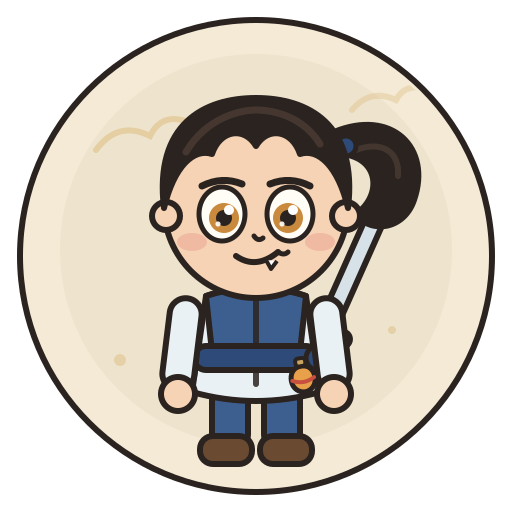
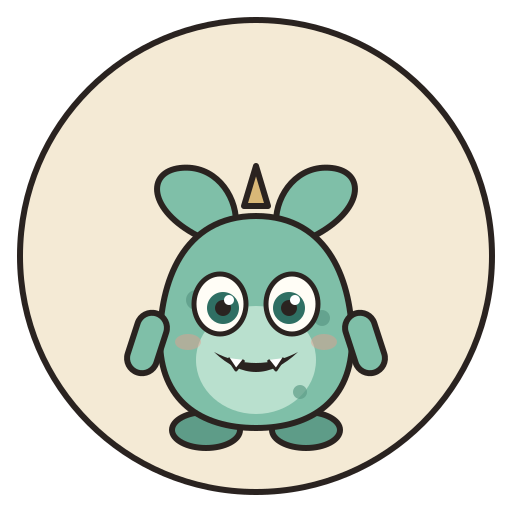
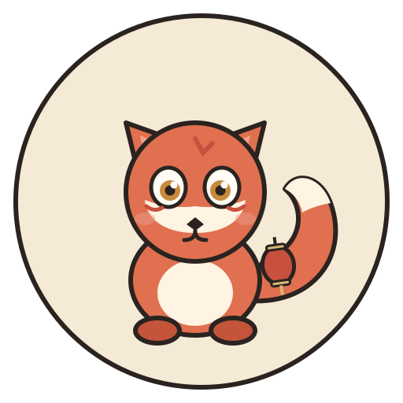
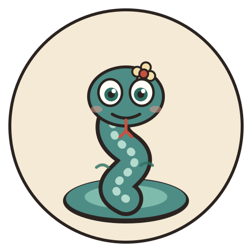
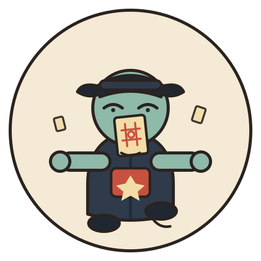
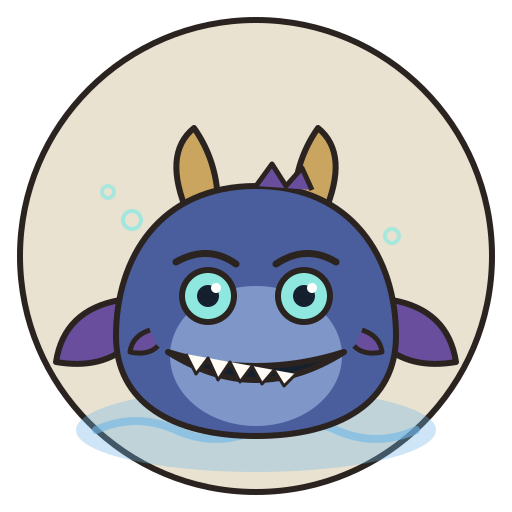

PALETTE & CHARACTER SHEET
仙剑 · 回魂
卡通版美术设定：2.5 头身、粗描边、平涂 + 一层软阴影。主角与妖怪共用同一套「纸感」底色，保证在暗色场景里依然一眼可读。
主角 · 李逍遥
少年剑客 / 近战 · 御剑

头身2.5 头身，头宽约为肩宽 1.8 倍
轮廓墨色 6px 粗描边，转角全部圆角
识别点呆毛马尾 + 背后木剑 + 红腰带
主色月白 #EAF1F5 × 靛蓝 #3D5F8F × 旧金 #D9B877
表情扬眉、琥珀色大眼、单颗虎牙的笑
动画待机 4 帧呼吸；跑步 6 帧；受击挤压缩放
妖怪 · 四种小怪
可爱 > 恐怖：圆轮廓、大眼睛、一到两个记忆点，避免血腥

小妖
杂兵 · 直线追击
叶子耳 / 独角 / 圆肚皮

狐妖
高速 · 逼走位
三尾意象 / 红妖纹 / 小灯笼

蛇妖
远程 · 吐毒弹
盘身 / 头顶小花 / 分叉信子

僵尸
精英 · 肉盾
官帽 / 符纸 / 前伸的手
Boss · 水魔兽
大一圈、暗一档、亮一处：身体压暗，只让眼睛和水波发光

水魔兽
终局 Boss · 弹幕 + 召唤 · 半血转阶段
场景 · 仙灵岛夜（山水）
水墨三层山 + 一轮月 + 雾带 + 水面；亭台与松树做剪影，前景压暗保证角色可读
游戏内预览
实机截图（全术法演示）：飞剑拖尾、雷链、火环、护盾、毒瘴
色板
整套只用 8 个主色，保证同屏 60 只怪也不花
夜墨#07090B
描边墨#2A2320
宣纸#F4EAD5
青绿#3E6B63
妖玉#7FBFA8
朱砂#C8503F
旧金#D9B877
狐火#E0704F
卡通化规则
比例
主角 2.5 头身；小怪 1.5–2 头身，Boss 3 头身。头越大越可爱，但 Boss 要保留压迫感。
线
外轮廓 6px、内结构 4px，全部圆角连接；不用纯黑，用 #2A2320 暖墨。
色
平涂为主，只加一层 15% 阴影和一处高光；不用复杂渐变，保证缩放后仍清晰。
眼
眼睛占脸 1/3，双高光；妖物瞳孔竖或方，主角瞳孔圆。
剪影
每个角色必须有 1 个剪影特征：马尾、叶耳、大尾、盘身、官帽、巨角。
动效
待机上下 4px 浮动；受击横向挤压 0.1s；死亡缩小 + 粒子，不播血腥。